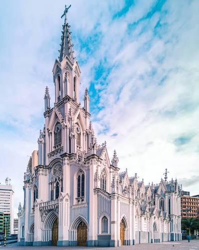

La Ermita: iglesia gótica, símbolo de la ciudad, reconstruida en 1942 tras un terremoto.
San Francisco: complejo del siglo XVIII con su Torre Mudéjar de ladrillo.
San Antonio: templo colonial en una colina, corazón del barrio histórico de fachadas blancas, ventanales de hierro forjado y patios interiores.
Cristo Rey (26 m) y la estatua de Belalcázar, que apunta hacia el Pacífico.
Torre de Cali: rascacielos modernista de 183 m. CAM: complejo brutalista junto al río Cali, sede del poder político local.

Farallones de Cali: montañas de la cordillera Occidental y parque nacional. Río Cali cruza el centro histórico; Río Pance es el balneario natural de agua fría.
Cali es la capital de las aves de Colombia (más de 560 especies, como la tángara multicolor). Habita aquí la rana venenosa de los Farallones. Guayacanes y orquídeas pintan la ciudad y el campo.
Naturaleza y comunidad: peregrinaciones a los cerros, el Pance como espacio de sanación, avistamiento de aves en el Km 18, senderismo y el «paseo de olla» que sostiene a comerciantes locales.